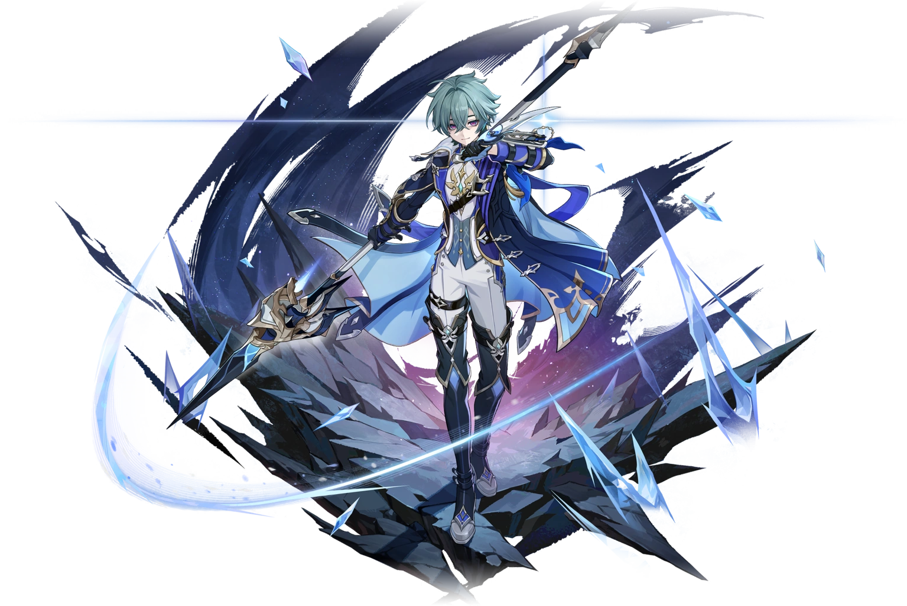

Заместитель капитана отряда дальнего боя Ордо Фавониус, рыцарь, действующий нестандартно и предпочитающий необычные тактики.

Лоэн — заместитель капитана отряда дальнего боя Ордо Фавониус.
Рыцарь, действующий нестандартно и предпочитающий необычные тактики. Его титул — «Заточенная стрела», созвездие — Хитрый Заяц.